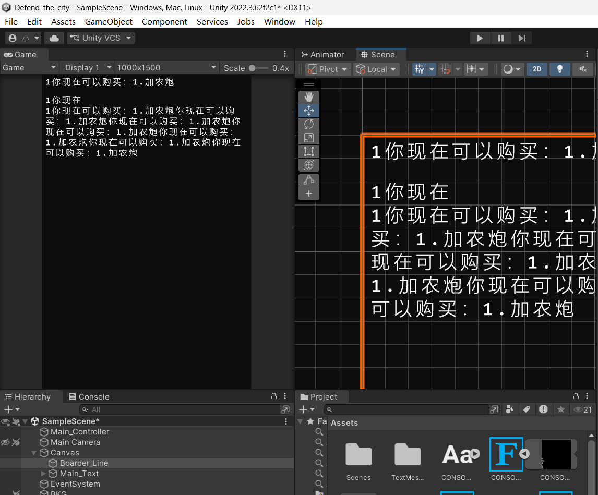

城市守卫战网址！
网站搭建中，尽情期待！
3月8日——开发日志更新！！
-- 开始使用Unity复现控制台代码
unity的插件可以很轻松的将游戏发布到网页上，而且unity也可以实现非常炫酷的动画功能，比C++控制台灵活。
但是， 要是这些控制台游戏整上网页了，我感觉非常有可能 失去灵魂 啊
在网页游戏中，完全可以给胎神之路、掘地矿胎加上真实 的物理引擎，也可以给城市守卫战等战斗游戏添加 非常炫酷的动画效果 …… 但是，控制台小游戏拥有独特的美术风格，画蛇添足的添加会让它们变得看起来过于 廉价 ！
你可以在我的洛谷私信中留言你的看法！
